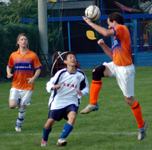
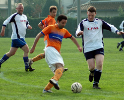
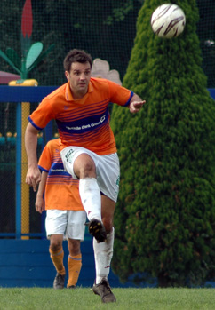

|
YC&AC Saturday 15th October. Barbarians had started the 2005/06 campaign in an unusual style, with a win in the first game and were looking to retain their 100% record in glorious conditions on Sat afternoon at YCAC. Line up for the Barbs was Fred in goal, solid back line of Fergs, Seno, Hideki & Steve, 5 man midfield featuring Kaneko, Clark, John Stokes, Alex & Muramoto with Danny up front as the lone strike force. Hiro was our one sub who would come on for Kaneko mid way thru the first half
A spirited start saw a couple of early opportunities for the Barbarians but YCAC defended well and it took 20 minutes before the first real opportunity of the game when Stokes unleashed a shot that the YCAC keeper did very well to turn around the post. The resultant corner was delivered to the back post and another good chance resulted in a scrambled clearance keeping the scores at 0-0.
In the next 15 minutes Barbarians continued to push forward using the right hand flank for most of the attacking moves. Another well taken corner saw Stokes leap unchallenged but unfortunately he couldn't get the header on target and the ball whipped past the left post. 5 minutes later a similar corner saw Seno-san drive a powerful header towards goal but again agonizingly just past the left post. YCAC were looking shaky when it came to defending corner kicks. YCAC had started to get into the game in the latter part of the first half with Marc Bailey and their no.16 Genki proving a handful at times. Stout defending saw most of the danger cut out well before any real threat emerged.
Finally a breakthrough just before half time surprisingly saw YCAC go 1-0 up from a corner, the ball delivered to the near post was met with a scramble of heads but without a clean contact the ball bounced off a YCAC back and just squeezed inside the post for an untidy and undeserved lead. Barbarians went into the break feeling they should be level at worst
Barbarians started the second half with Clarke & Alex pushing forward from the midfield to add support to Danny & Hiro and the Barbs immediately looked more threatening. Within 10 minutes the Barbs had been awarded a free kick just outside the box and well within striking range. John Stokes stepped up and drilled a low ball just past the wall and into the right hand corner. Frank Lampard must have been watching because he used the exact same technique later that day as Chelsea thumped Bolton 5-1
The Barbs were level and continued to push for a second goal. This left a few gaps in midfield and defence and YCAC exploited one of these gaps superbly, a long ball aimed at Genki should have been picked up by Hideki but he missed his clearance and Genki was thru on goal and delivered a superb effort past the advancing Fred for a 2-1 lead.
This subdued the Barbarians but there was still a feeling that they deserved more and slowly the attacks started building up. A couple of free kicks were awarded in similar territory to the one that produced the Barbs goal but Barbarians couldn't get the breakthrough and going into the last 10 minutes the game looked as though it would slip away. In a further Barbs attack down the right Alex picked up the ball on the edge of the area and looked to deliver his cross early but some good backtracking by YCAC meant he had to step around a couple of defenders, finally he delivered a good ball to the back post only to watch it drift into the corner for an equalising goal, it wasn't the cleanest of strikes but was the result of some great build up play and Barbs certainly felt they deserved to be level
With just a few minutes left Barbs were tempted to sit back for the point but one more attack saw a similar situation to the one that created Alex's goal. This time Kaneko delivered an even more outrageous high ball to the back post, looping high over the keeper to just slip under the bar for an unlikely third goal
In fairness YACA had probably done enough to deserve a draw but for once some of the luck that saw Barbarians loose many of their early games last year to late goals was reversed and Barbarians added a second win to their campaign, final score YCAC 2 Barbarians 3
Man of the Match : John Stokes
Match Reporter : Richard Carden
|